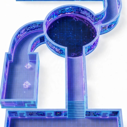

{{{ PRODUCT_NAME }}}
Загрузка игры…
Прогресс сохраняется в этом браузере
На весь экран: нажмите «Поделиться»
→ «На экран „Домой“» и открывайте игру с новой иконки.
Лучше сделать это сразу: там свой прогресс, отдельный от Safari.
✕
Поверните телефон
Играть удобнее горизонтально
Играть так